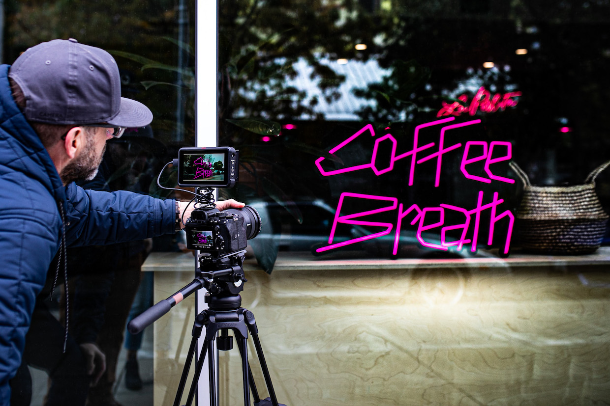

Inside the New Simonelli Group Campus in Central Italy
Industry | Howard Bryman | February 8, 2023
Simonelli Group, the Italian parent company of commercial espresso equipment brands Nuova Simonelli and Victoria Arduino, has cut the ribbon on the new Simonelli Group Campus n Belforte del Chienti,…

New Docuseries 'Coffee Breath' Gives Life to Coffee Stories to Coffee Stories
Columns | Nick Brown | February 8, 2023
Focused on coffee businesses and the stories of the impassioned people behind them, a new video sercies called Coffee Breath is flowing into production. Coffee Breath was created by former...
ASEAN COFFEE INSTITUTE LAUNCHES BARISTA CLASS LEVEL 1 IN THE PHILIPPINES
Posted on December 26, 2022 by gquetulio
The ASEAN Coffee Institute (ACI) Barista Class Level 1 opened for the first time in the Philippines last Dec. 15-16 at the UCC Coffee academy.Commune owner Ros Juan, Trainer Vanessa Caceres, and Assistant Trainer Adrian Bersaba aligned standards for the OJT run the attendees.